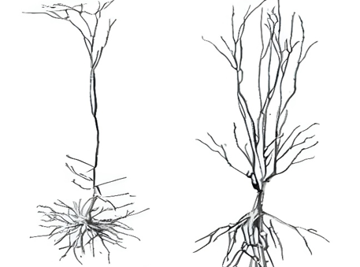

About
 大家好，我是吴熙东。目前大二，就读于东北大学医工学院与英国邓迪大学联培项目。我的专业是生物医学工程。
生物医学工程是一门交叉学科，它融合了医学、生物学、工程学等多个领域的知识，致力于解决医疗健康领域的实际问题。
大家好，我是吴熙东。目前大二，就读于东北大学医工学院与英国邓迪大学联培项目。我的专业是生物医学工程。
生物医学工程是一门交叉学科，它融合了医学、生物学、工程学等多个领域的知识，致力于解决医疗健康领域的实际问题。
大家好，我是吴熙东。目前大二，就读于东北大学医工学院与英国邓迪大学联培项目。我的专业是生物医学工程。
生物医学工程是一门交叉学科，它融合了医学、生物学、工程学等多个领域的知识，致力于解决医疗健康领域的实际问题。
 Multiscale feature enhanced gating network for atrial fibrillation detection
Multiscale feature enhanced gating network for atrial fibrillation detection
Xidong Wu
[SUBMITTED]
 An open-set atrial fibrillation recognition algorithm based on entropy perception
An open-set atrial fibrillation recognition algorithm based on entropy perception
Xidong Wu
[In writing]
Ultra lightweight atrial fibrillation detection algorithm and deployment based on Starnet
Xidong Wu
[In writing]

Predicting the mechanism of pyramidal neurons in synaptic integration by high-frequency electrical stimulation and patch clamp
Xidong Wu
[ICMMGH2023]
Aug 2024: Mar 2024: Jul 2023: Third Prize in The 8th National College Student Biomedical Engineering Innovation Design Competition Apr 2023: Third Prize in The 8th National Academic English Vocabulary Competition(NAEV)
Skills: TensorFlow, Keras, Python